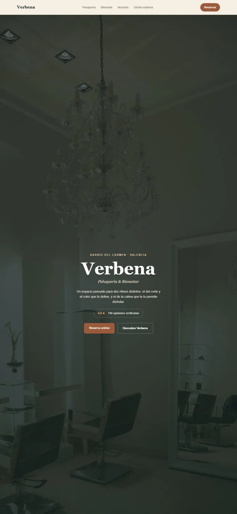
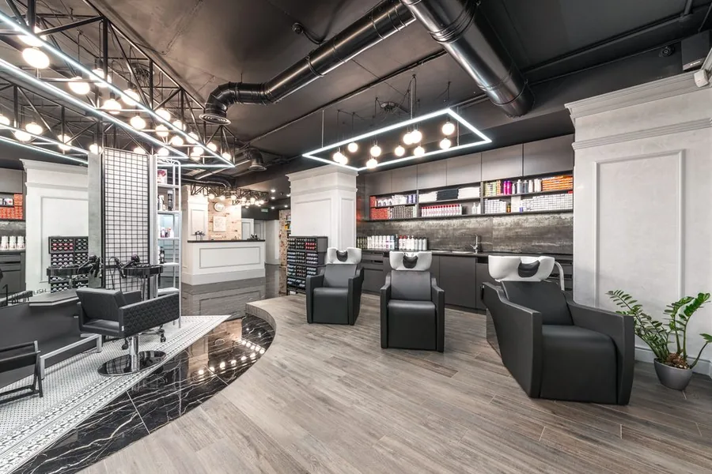
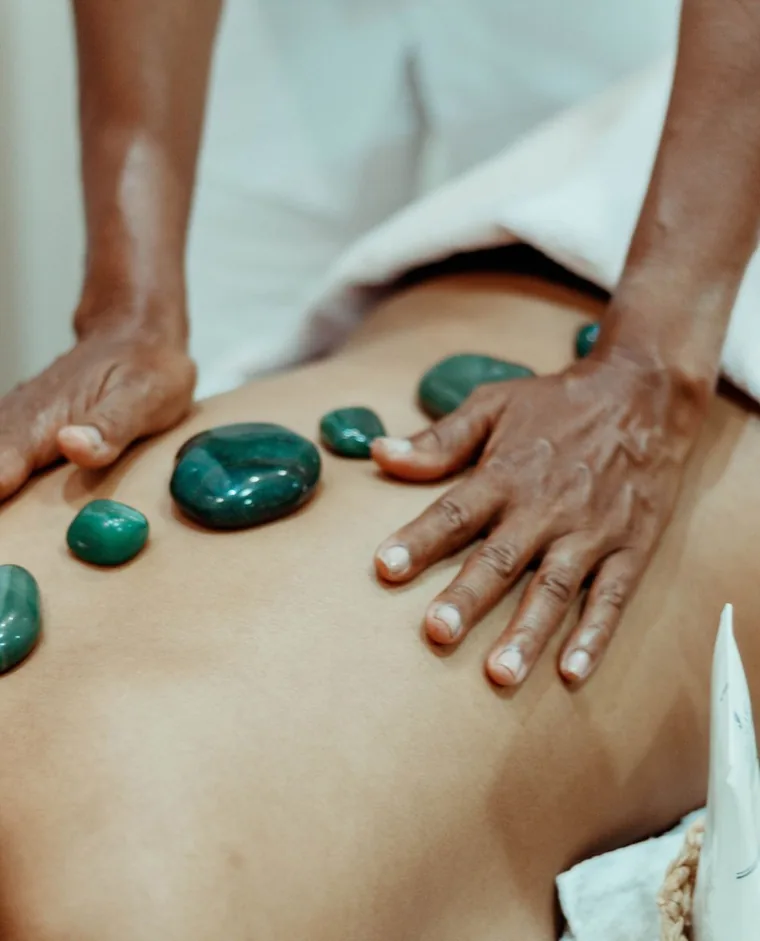

Verbena
Peluquería y bienestar · El Carmen
Belleza y bienestar · Negocio local
Querido dentro, invisible fuera
Nueve años, un local y 4,8 estrellas. Y a tres calles, nadie sabía que existía.
Proyecto de muestra — la marca es nuestra, el método es el realLo que se construyó
No lo describimos: lo construimos
La web entera, con el mismo nivel de acabado que recibe un cliente que paga. Arrastra para ver lo que había y lo que hay.
Una ficha de Google, y nada más.
Sin web, sin páginas que indexar, sin forma de reservar fuera del horario de teléfono. Nueve años de trabajo que en internet no aparecían por ningún lado.

A la izquierda no hay una captura de la web antigua porque no había web antigua. Montar una habría sido inventarse el punto de partida.
01 · El contexto
Todo estaba. No se veía
Escribió por algo concreto: en verano, con el barrio lleno de gente de fuera, no entraba nadie nuevo.
Pásale la luz por encima
Nada de esto se inventó. Estaba todo — pero a tres calles no lo veía nadie.
02 · La auditoría
Lo que encontramos
El método no empieza por «hagamos una web»: empieza mirando cada canal. El problema declarado casi nunca es el real.
| Web propia | No existe. Toda la presencia digital depende de la ficha de Google y de menciones sueltas en las redes de sus clientas. | Alta |
| Ficha de Google | Activa y bien valorada, pero incompleta: sin fotos recientes y sin la categoría de bienestar, así que no sale en la mitad de las búsquedas que le corresponden. | Alta |
| SEO local | Fuera del top 3 del mapa para «peluquería Carmen Valencia». Competidores con peor valoración aparecen por delante. | Alta |
| Reservas | El 100 % por teléfono o por el WhatsApp personal de la dueña, con cuello de botella en las horas punta. | Media |
| Venta cruzada | La peluquería y el bienestar se perciben como dos negocios distintos, incluso entre las clientas habituales. | Alta |
03 · La estrategia
Tres objetivos, fijados con ella
El problema, en tres frases
- Solo la encuentra quien busca «Verbena» por su nombre
- Reservar depende de que alguien coja el teléfono
- Cada clienta usa la mitad del negocio y no sabe de la otra
El objetivo, en tres frases
- Salir cuando alguien busca «peluquería» o «masaje» en el Carmen
- Reservar a cualquier hora, sin descolgar
- Que cada visita descubra el otro lado de la casa
04 · El detalle
Fotografía real, no banco de imágenes


05 · El resultado
Lo que busca conseguir
Objetivos de propuesta para un negocio local de este tamaño. No son resultados medidos, y esta página no va a decir que lo sean.
Medido el 30 de agosto de 2026 sobre esta misma página, en un móvil de gama media con la red y el procesador limitados. Se repite con puertas.py.
No había que inventarle una reputación. Había que ponerla donde alguien pudiera encontrarla.
Zyad Bennani · fundador de Faro Digital
Lo que se usó aquí
Auditoría, web y SEO local
- Auditoría 360°
- Estrategia
- Diseño web
- UX/UI
- Desarrollo
- SEO local
- Ficha de Google
- CRO